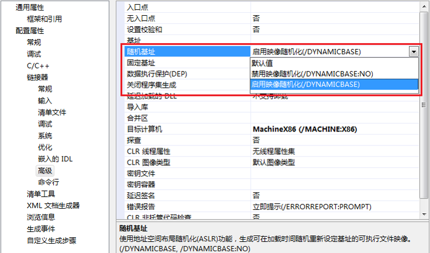

ASLR
ASLR
- =
Address Space Layout Randomization=地址空间布局随机化
- 是什么：是一种针对缓冲区溢出的安全保护技术
- 背景
- 没有ASLR时
- 每次进程执行，加载到内容中，代码所处堆栈stack的位置都是相同的
- 如果开启了
ASLR=机制：
- 操作系统加载器会针对基地址再去加上一个随机生成的偏移地址，然后再去加载程序模块
- = 借助ASLR，PE文件每次加载到内存的起始地址都会随机变化
- 通过对堆、栈、共享库映射等线性区布局的随机化
- 增加攻击者预测目的地址的难度
- 防止攻击者直接定位攻击代码位置，达到阻止溢出攻击的目的
- 提示
- 目的
- 系统支持ASLR的情况
Linux
MacWindows
PE头文件中会设置IMAGE_DLL_CHARACTERISTICS_DYNAMIC_BASE标示来说明其支持ASLR
- 如何开启
- Windows
- 语法：
- 开启：
/DYNAMICBASE
Visual Studio项目属性的配置
- 

- 关闭：
/DYNAMICBASE:NO
- 使用此技术后，杀死某程序后重新开启
Linux：地址会改变Windows：地址不会改变，重启系统才会改变
- ASLR主要影响几种部分
- 相关
- 目前大部分主流操作系统都已经实现了ASLR
PIE vs ASLR
Linux
PIE=Position-Independent Execute=地址无关可执行文件
- 编译时
- 地址随机化针对：代码段和数据段(
.data段 .bss段)
- ASLR：
Linux的ASLR+PIE作用 == Window下ASLR的作用
如何绕过ASLR
- 攻击未启用ASLR的模块
- 虽然有映像随机化，但有可能进程中存在未启用ASLR的模块。 前面提到的
ROP技术要求从一个固定的地址获取Gadget，如果进程中存在未启用ASLR的模块，那么就可以从那个模块获取Gadget了。 使用OD的OllyFindAddr插件可以快速找到进程空间中未启用ASLR的模块
- 堆喷射（
HeapSpray）技术
- 虽然有堆栈随机化，不过
HeapSpray技术将ShellCode布局到0x0C0C0C0C（或者其他指定的地址上，通常这个地址要比较大），并不会受堆栈随机化的影响。 其实，HeapSpray中使用ROP绕过DEP的时候，就使用了前面提到的攻击未启用ASLR的模块。 只是，HeapSpray把ShellCode布局在堆上
- 覆盖部分返回地址
- 映像随机化中，虽然模块的加载基地址发生变化，但是各模块的入口点地址的低位字不变，只有高位字进行了随机化处理。
- 对于地址
0x12345678，其中5678部分是固定的，如果存在缓冲区溢出，可以通过memcpy对后两个字节进行覆盖，可以将其设置为0x12340000 ~ 0x1234FFFF中的任意一个值。
- 如果通过
strcpy进行覆盖，因为strcpy会复制末尾的结束符0x00，那么可以将0x12345678覆盖为0x12345600，或者0x12340001 ~ 0x123400FF
- 部分返回地址覆盖，可以使得覆盖后的地址相对于基地址的距离是固定的，可以从基地址附近找可以利用的跳转指令
- 这种方法的通用性不是很强，因为覆盖返回地址时栈上的
Cookie会被破坏。不过具体问题具体分析，为了绕过操作系统的安全保护机制需要考虑各种各样的情况
- Java Applet Spray
- Java Applet中动态申请的内存空间具有可执行属性（PAGE_EXECUTE_READWRITE），类似HeapSpray技术，可以在固定的地址上分配滑板指令(如NOP)和ShellCode，然后跳转到那个地址上面去执行。 和常规的HeapSpray不同，Applet申请空间的上限为100MB，而常规的HeapSpray可以达到1GB
- JIT Spray
- JIT (Just In Time Compilation) 即时编译，也就是解释器（比如Python解释器）。主要思想是将 ActionScript代码中进行大量的XOR操作。然后编译成字节码，并且多次更新到Flash VM中，这样它会建立很多带有恶意Xor操作的内存块
- Tombkeeper在CanSecWest 2013上提出的基于SharedUserData的方法